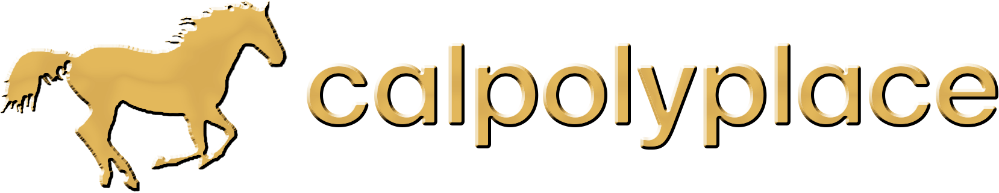

made with ♥︎ & claude code by jan rebolledo
canvas state is shared on a server. no personal information is stored :)
analytics are collected to improve the experience.
not affiliated with cal poly pomona.

press to move around
& to toggle drawing
or use wasd/arrow keys to move around
& use space to toggle drawing
move
start drawing